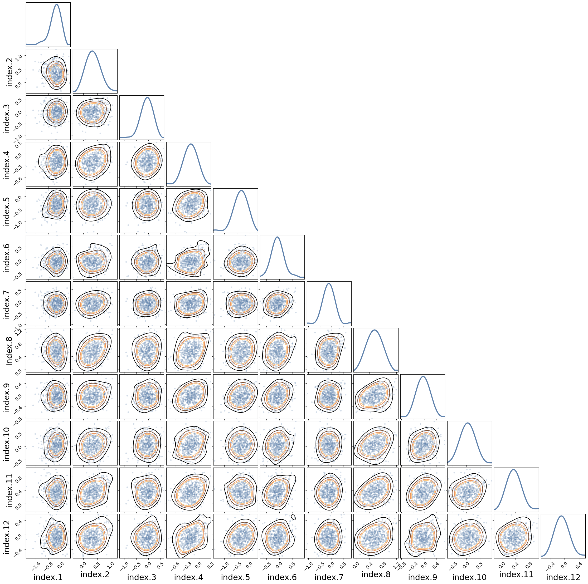

Hospitals#
import matplotlib.pyplot as plt
import numpy as np
import pandas as pd
from pears import pears
from pyinla.marginals import *
from pyinla.model import *
d = pd.read_csv("./data/hospital.csv", delim_whitespace=True)
priors = dict(prior_prec=dict(prec=dict(prior="pc.prec", param=np.array([1.0, 0.01]))))
formula = 'r ~ f(hospital, model="iid", hyper=prior_prec)'
data = pd_to_dict(d) | priors
result = inla(
formula,
data,
family="binomial",
n_trials=data["n"],
control_compute=dict(dic=True, config=True, return_marginals_predictor=True),
control_predictor=dict(compute=True),
).improve_hyperpar()
posterior = result.sample_posterior(500)
print(result)
Time used:
= 1.38, = 0.187, = 0.0298, = 1.6
Fixed effects:
mean sd 0.025quant 0.5quant 0.975quant mode kld
(Intercept) -2.547 0.141 -2.842 -2.543 -2.279 -2.535 0
Random effects:
Name Model
hospital IID model
Model hyperparameters:
mean sd 0.025quant 0.5quant 0.975quant mode
Precision for hospital 11.53 12.71 2.37 8.27 39.19 5.34
Deviance Information Criterion (DIC) ...............: 74.45
Deviance Information Criterion (DIC, saturated) ....: 24.69
Effective number of parameters .....................: 8.10
Marginal log-Likelihood: -41.17
is computed
Posterior summaries for the linear predictor and the fitted values are computed
(Posterior marginals needs also 'control.compute=list(return.marginals.predictor=TRUE)')
re_hospital = result.get_marginal_type("random").get_marginal("hospital")
for re, n in zip(re_hospital, re_hospital.names):
re.spline().plot(label=n)
plt.title("Marginal posteriors for random effects for hospital")
plt.legend()
<matplotlib.legend.Legend at 0x2a24f8460>
# posterior samples from the joint marginals for the random effects
pears(posterior["latent"][:, 12:24, 0].T, labels=re_hospital.names);

plt.hist(posterior["hyperpar"] ** (-1 / 2), density=1, bins=20)
result.get_marginal_type("hyperpar").get_marginal("Precision for hospital").transform(
"x**(-1/2)"
).plot()
plt.title("Marginal posterior for standard deviation for hospital")
Text(0.5, 1.0, 'Marginal posterior for standard deviation for hospital')
plt.hist(posterior["latent"][:, -1], bins=20, density=1)
result.get_marginal_type("fixed").get_marginal(0).spline().plot()
plt.title("Marginal posterior for intercept")
Text(0.5, 1.0, 'Marginal posterior for intercept')
plt.hist(posterior["latent"][:, -1], bins=20, density=1)
result.get_marginal_type("fixed").get_marginal(0).spline().plot()
plt.title("Marginal posterior for intercept")
Text(0.5, 1.0, 'Marginal posterior for intercept')